AgRevolution, an AGCO-owned dealership group, needed a four-sided trailer wrap that carries two brands, Fendt on one side and Massey Ferguson on the other, plus every location it serves. I used image generation to agree a direction with the client in a week. Then I rebuilt it for print: every machine from the client's own photography, every logo from official files, every word in live type. A generated image can sell an idea, but it can't be trusted with the facts.
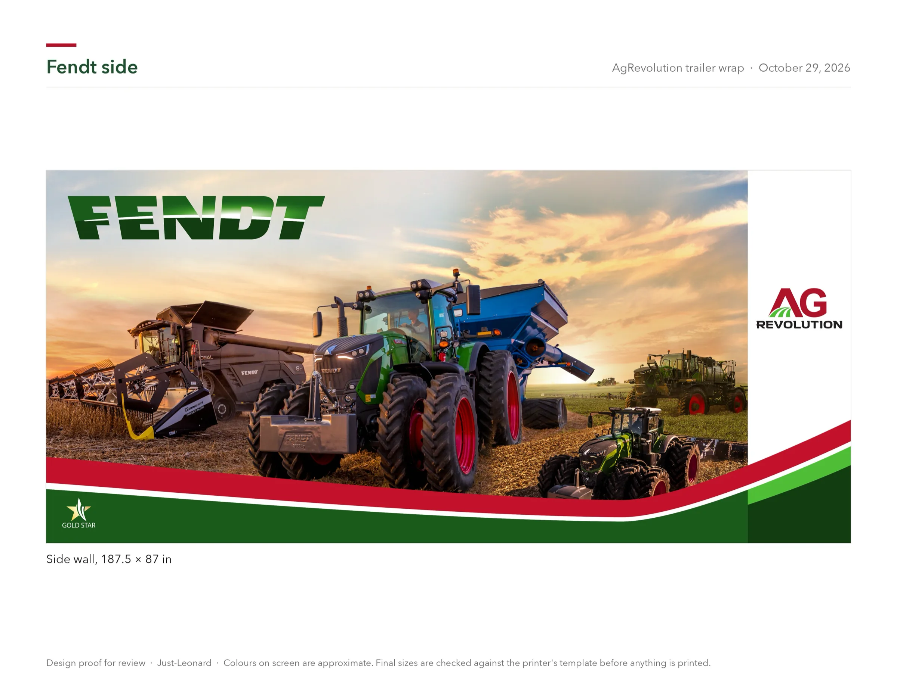
Final proof · 2026-10-29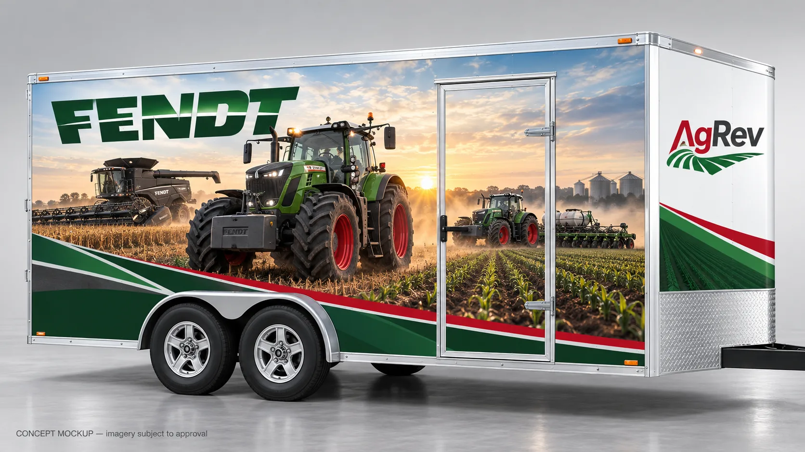
AI conceptThe client's scope set a clear order on every surface. On the Fendt side: Fendt first, then the equipment, then AgRevolution. The Massey Ferguson side follows the same order. The rear leads with AgRevolution, then a map of its locations, then the website and phone number. Each brand side had to show a fleet, not one hero machine.
The printer asked for a PDF or Illustrator file with half an inch of bleed. That requirement shaped everything: whatever the client approved had to be something I could build as real, editable artwork.
187.5 × 87 in each. Fendt on one side, Massey Ferguson on the other.
87 × 74 in, double doors with a centre seam. Logo, location map, website, phone.
Two 53 × 64.25 in panels. Logo, website and phone. No equipment.
Sizes from the client's measured trailer sheet; the printer's own template is still to come.
Before spending production hours, I generated six concept renders on Sep 14 to show the client what the trailer could feel like on the road. On Sep 21 the client picked Direction A: warm evening light, one continuous field across both sides, red, green and white bands, and AgRevolution's logo on a white forward panel.
The next round of client edits arrived on Sep 28: a sprayer on both sides, a tractor hitched to the baler, the Gold Star logo on the Fendt side and the "Always Running" line on the Massey Ferguson side. Generation got us to that conversation fast.
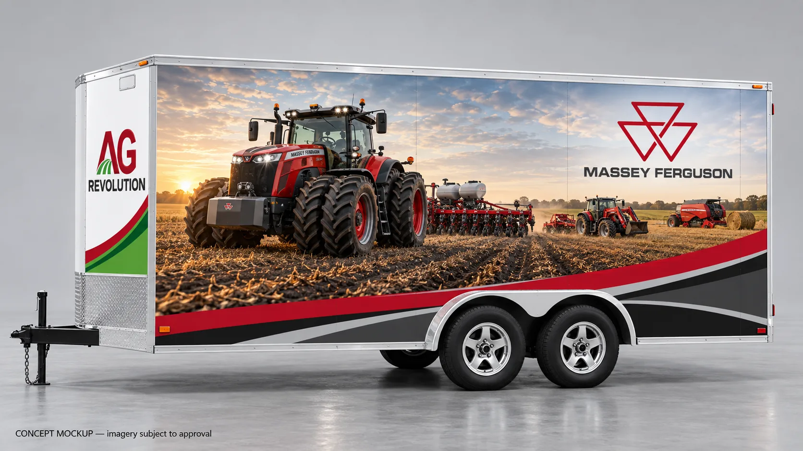
AI concept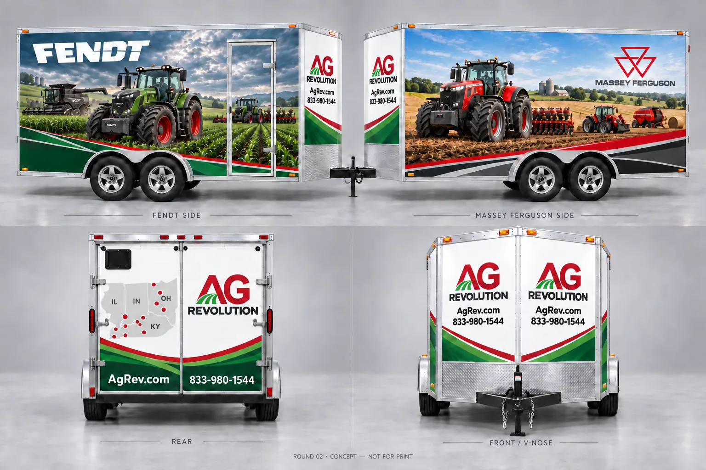
AI concept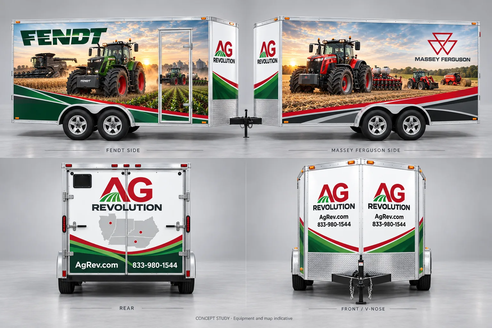
AI conceptAll six renders were made on Sep 14, 2026 with AI image generation, and are kept in a folder marked do-not-use for production.
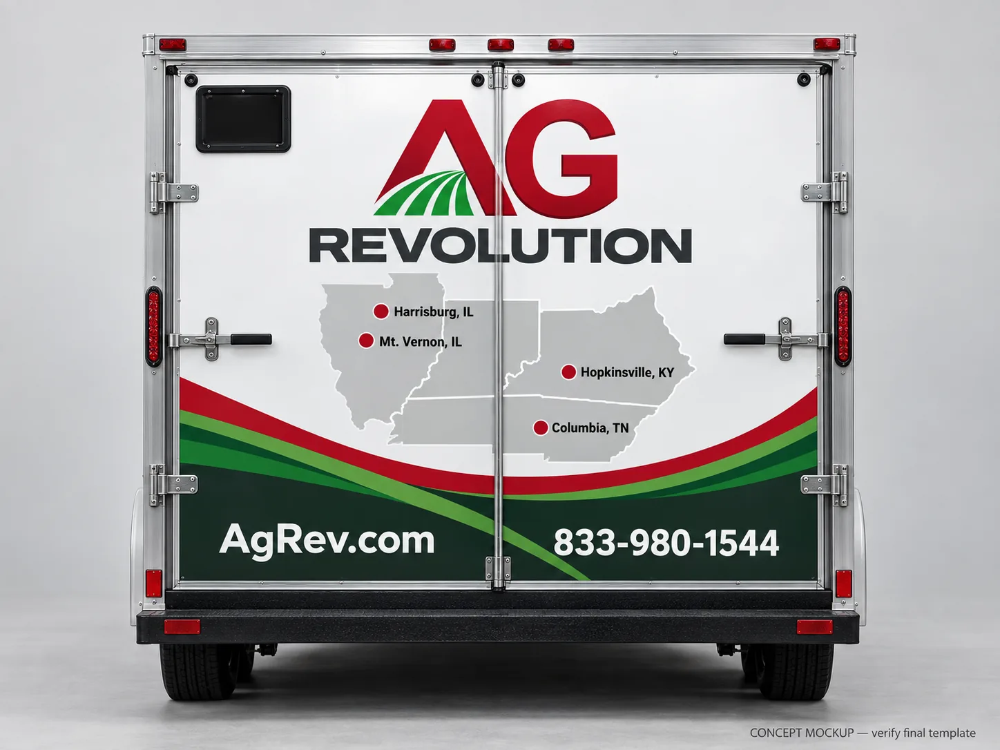
AI concept Mt. Vernon, IL Columbia, TNIt printed "Columbia, TN". The real store is in Columbia, Kentucky. AgRevolution has no Tennessee location.
It printed "Mt. Vernon, IL", which is not on AgRevolution's store locator or in the project's researched city list.
The Fendt and Massey Ferguson wordmarks are approximations, not the brands' supplied vector marks.
Every machine is generated, so none is guaranteed to be a real, accurate model.
Checked against AgRevolution's own contact and dealer-locator pages on Sep 18, 2026. The website and phone number in the renders were correct.
The concept sets the mood. It is never the source for a logo, a machine or a fact.
"The AI [concepts] are mood and composition references only. They are not a source for logos, machinery, masks, panel geometry, or production copy."The project's build spec, Sep 2026
I rebuilt each panel to match the approved concept at the same scale, from sources a printer can trust.
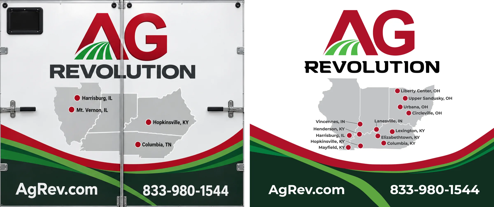
AI conceptRebuild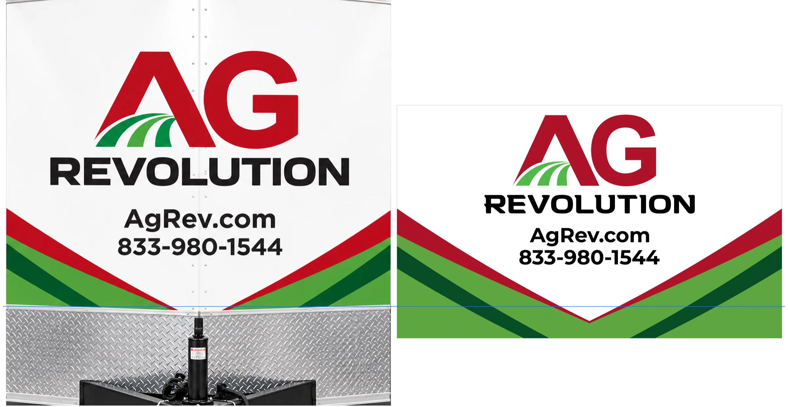
AI conceptRebuild"The [real-asset build] doesn't wow me like the concept does."My note on the first real-asset build, Oct 27, 2026
A generated image sets a high bar for drama because it has no rules to follow. Rather than settle, I held the real build to the concept's impact and told the build exactly what to change:
The hero tractor became the largest machine, low and forward, like the concept.
Every machine graded to the same warm, backlit sky, so the side reads as one photograph.
Contact shadows, stubble over the tyres and dust behind the hero, so nothing floats.
Background machines softened with haze and grouped toward the horizon.
I hand-finished both side panels myself in Photoshop.
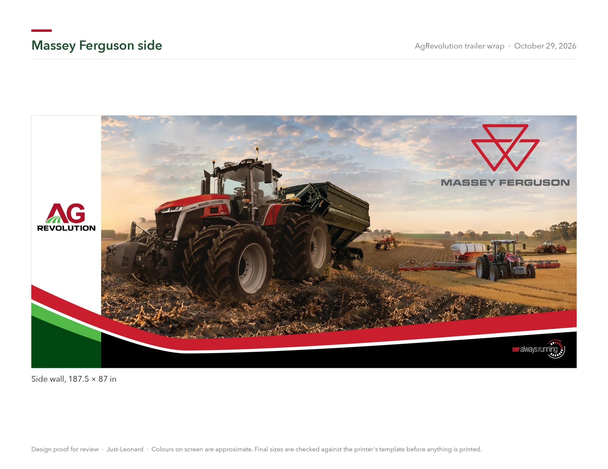
Final proof · 2026-10-29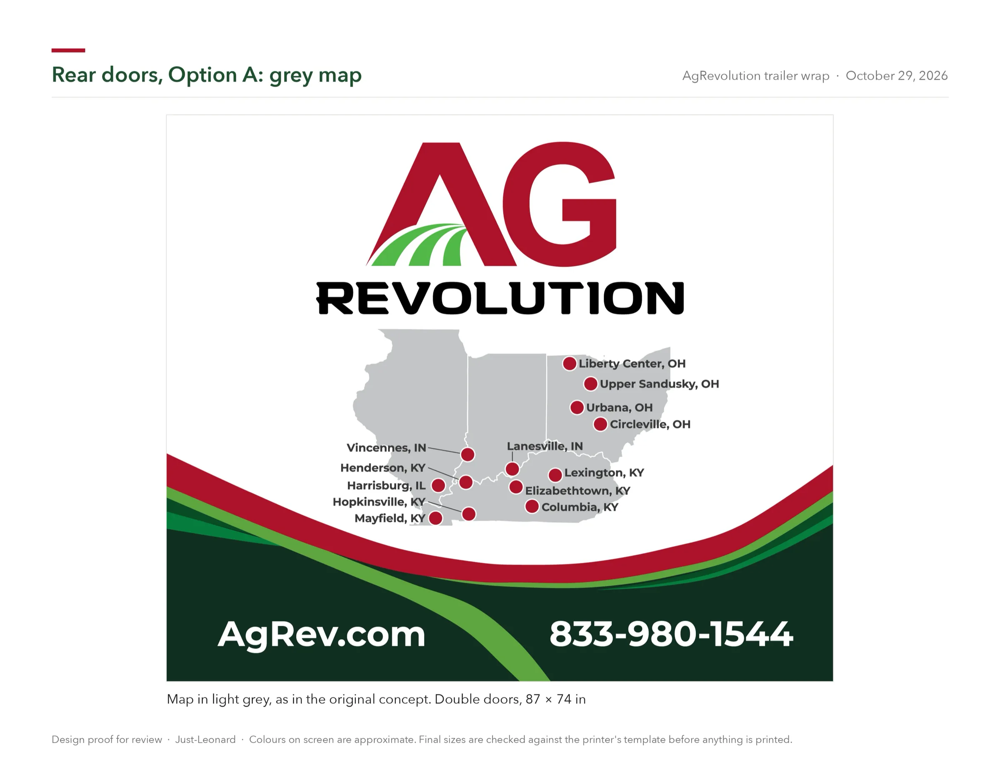
Final proof · 2026-10-29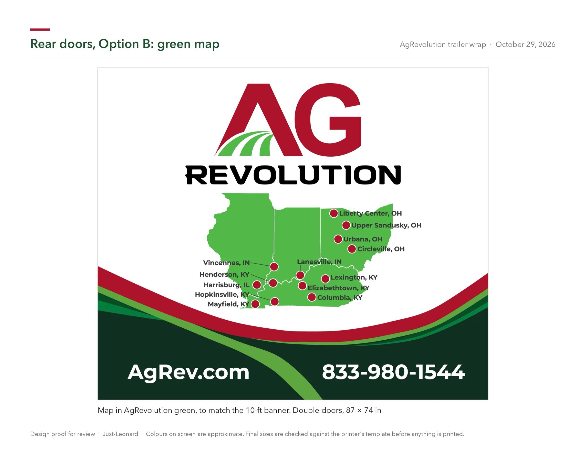
Final proof · 2026-10-29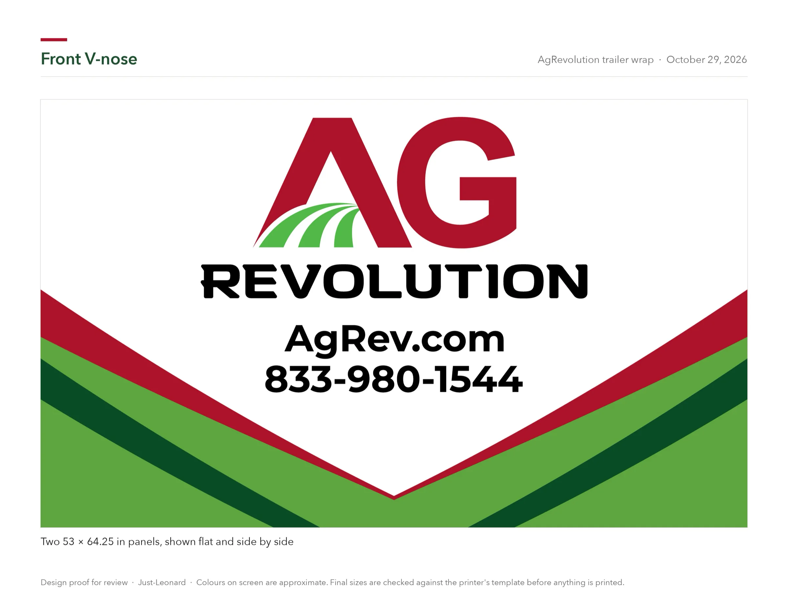
Final proof · 2026-10-29From the first generated renders (Sep 14) to the client's chosen direction (Sep 21), before any production hours.
Generator errors caught before anything went near a printer: a wrong state, an invented location, fake logos, invented machinery.
Correct locations on the rebuilt rear map, against the concept's four.
Pages in the version 4 proof set: a cover, both sides, two rear options and the front.